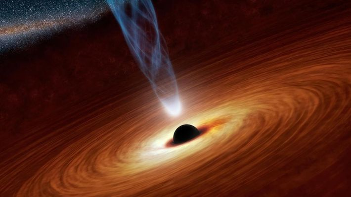
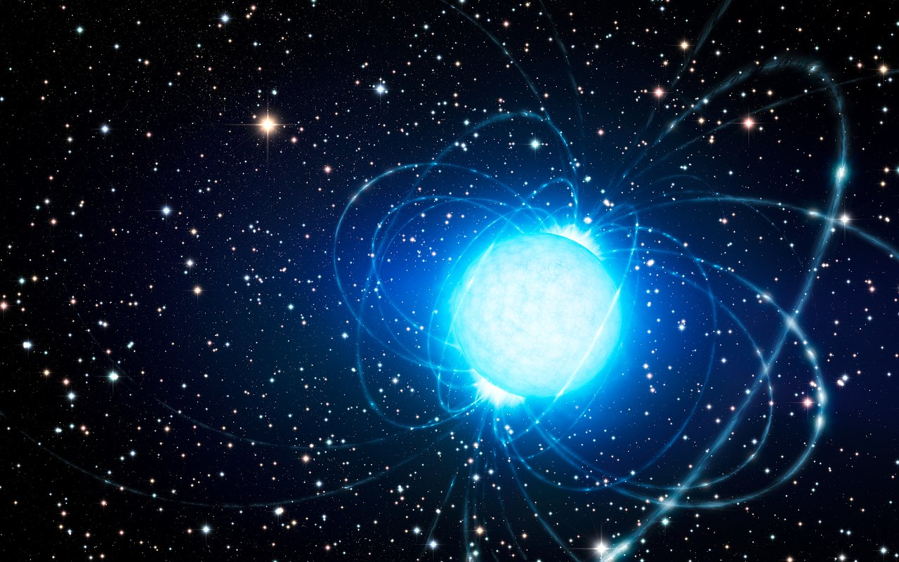

| Agujero negro supermasivo | Agujero negro mediano | Agujero negro estelar | Microagujero negro | |
|---|---|---|---|---|
| Definición | El primer caso con el que nos encontramos es con el agujero negro supermasivo. En este caso son objetos tan inmensamente grandes, se cree que pueden superar en tamaño al Sistema Solar, que no somos capaces de imaginar su envergadura.Las teorías dicen también que el centro de las galaxias podría ser una agujero negro supermasivo, lo que permite que la misma se mantenga unida. | En este caso hablaríamos de los estertores de vida de una estrella supergigante, que ya ha pasado su estado de supernova, expulsando materia, quedando en su núcleo los elementos más pesados, precipitándose sobre sí mismos por la fuerza del campo gravitacional. Se estima que su tamaño puede ser similar al de la Tierra, aunque con una masa muy superior, hasta 100 veces la del Sol. | En este caso, también es una especulación. Este tipo habría sido provocado por la explosión de una estrella menor que una supergigante. Así pues, son de tamaño más reducido, incluso podríamos hablar de kilómetros de diámetro, aunque con masas superiores a la de nuestro propio Sol. | Se especula que fueron creados en los inicios del Universo tal como hoy lo conocemos, aunque en realidad no se conoce su origen. Son de tamaños minúsculos, como un grano de arena de playa, pero con una masa similar a la de nuestro propio Sol. |
| Tamaño | Grandes | Pequeños | ||

Los magnetares son los extraños remanentes superdensos de explosiones de supernovas. Son los imanes más potentes conocidos en el universo — millones de veces más potentes que los imanes más fuertes de la
Tierra. Utilizando el telescopio VLT (Very Large Telescope) de ESO, un equipo de astrónomos europeos cree haber hallado, por primera vez, a la estrella compañera de un magnetar. Este descubrimiento ayuda a explicar
cómo se forman los magnetares — un enigma de hace 35 años — y por qué esta estrella particular no colapsó en agujero negro tal y como esperarían los astrónomos. Cuando una estrella masiva colapsa por su propia
gravedad durante una explosión de supernova, puede formar, o bien una estrella de neutrones o un agujero negro. Los magnetares son una forma inusual y muy exótica de estrella de neutrones. Como todos estos objetos
extraños, son pequeños y extraordinariamente densos — una cucharadita de materia de estrella de neutrones tendría una masa de aproximadamente mil millones de toneladas — pero también tienen campos magnéticos
extremadamente potentes. Las superficies de los magnetares liberan grandes cantidades de rayos gamma cuando atraviesan una etapa de ajuste repentino, conocida como un terremoto estelar (starquake), consecuencia
de las enormes tensiones que tienen lugar en sus cortezas. El Magnetar es una variación ampliamente aceptada de una estrella de neutrones, y una explicación común para ciertos fenómenos como los repetidores de rayos
gamma suaves y los pulsares anormales de rayos X.